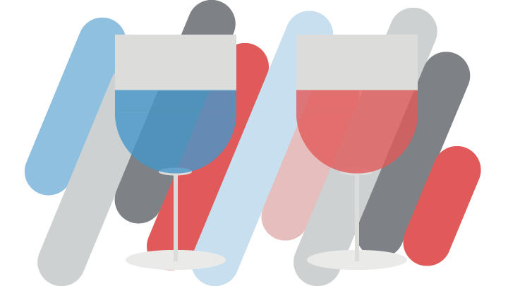
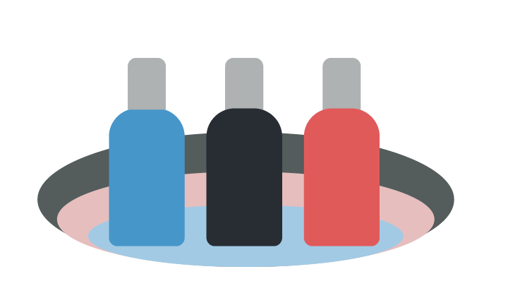
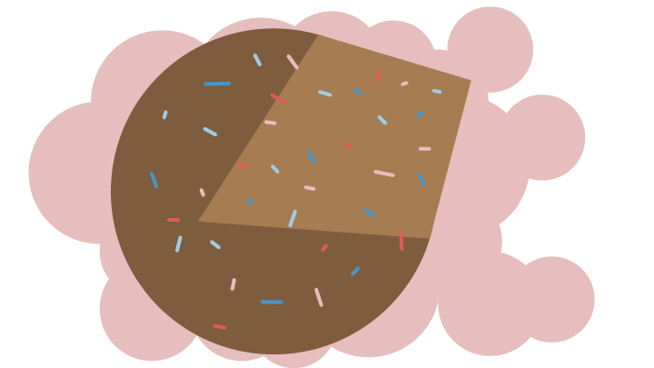
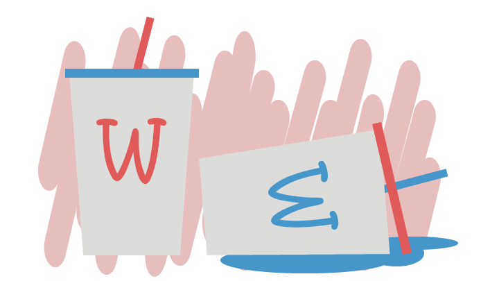
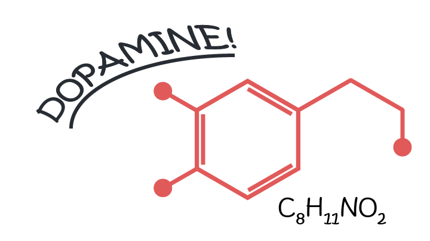

Our brain tricks our body with food. Almost everything we eat affects our brain, but our brain also influences what we eat and how we perceive it. Food research is an interesting field, where our beliefs of the relation between our brain and food are being challenged every day. There has been some great food research with crazy experiments. After one piqued my interest, I went on a search and listed the most interesting effects the brain has on your food perception.
1. Food colour
One of the most famous experiments is one where French researchers coloured a white wine red with an odourless dye. They then asked a panel of wine experts to describe its taste. They sipped, sniffed, spat and did whatever connoisseurs do. Then they described the wine and its rich bouquet. Red fruit. Earthy tones. You know the language. It turned out that they used mostly descriptors for red wine, just because it looked red.

Above study shows that the colour played a significant role in how the white wine was perceived. However, the study does have a point of contention. It may be easier to trick someone when the range of possible offerings is limited, like with wine. That builds on expectations that trigger a pre-trained vocabulary. So, while interesting, I wasn't convinced that food colouring alone would trick the brain in unrelated cases. Thus, to support the claim that colour influences taste I set out to search for further evidence.
The red drink... or the blue drink?
And more evidence is exactly what I found. I uncovered two more studies where they experimented with sugary drinks. The first showed that added food colouring can have an effect of up to 10% on the perceived sweetness of the food, depending on the colour. Red is the sweetest. The second study gave people a colourless soda which was either lime, strawberry or orange flavoured, or without any at all.

When the researchers started playing with food colourings, the participants' ability to determine the flavour of the drink was impaired by the food colouring. Even after being told to ignore the colouring completely. Fun fact: the intensity of the colour had no significant impact on the perception. Red is red, according to your brain.
Luckily for us, that's not all I found. The next study really makes you question the wickedness of scientists.
It shows us in a somewhat dark albeit humorous way that colour perception is a very powerful thing. Mad scientists plucked some random passers-by off the street. They offered them a free meal of chips, steak and peas. They might've found it odd that the lighting in the room was very dim, but dove on the free meal regardless. Halfway through the dinner the lighting was turned up to a normal level, accompanied by an evil cackle. The true nature of the food was revealed. The steak was blue, the chips green and the peas red. This led to several guests feeling very ill all of a sudden. A few were even spotted rushing off to the nearest bathroom. (last 3 studies from flavourjournal.com)
Takeaway: colour the steak blue and have it all to yourself!
— Mad Scientist Handbook
While I laid it on thick in the last example, all these studies support the claim that food colour does change our food perception. Colour impacts whether we perceive it as sweeter or whether we rush to the bathroom. Fun takeaway: if you're making steak at home, add a bit of food colouring and have it all to yourself.
2. Food texture and shape
The second point on this list is once again based on the direct perception of food. Foodnavigator reports of a study showing that food shapes influence your taste perception. For example a round food would make you think that the food is sweeter, whilst angular shapes give it a more bitter taste.

A Nestlé study has some more punch behind it. Cadbury’s Dairy Milk, a chocolate manufacturer, changed the shape of their chocolate, but not its recipe. When they did so, consumers on internet forums complained en masse about a change in the taste. And, as we all know, internet outrage is the main driver for research. Thus, the Nestlé Research Centre set out to study the effects of chocolate shape on the chocolate experience.
They conjured up ten different shapes of chocolate and tested each on several factors. They found significance in the perceived melting characteristics and smoothness. They also mentioned smaller differences in cocoa and caramel flavours and aftertaste. As for my own results, I perceived an increased chocolate craving while doing this research.
An Okijama & Spence paper (that sounds more interesting than it is) on food textures attempted to show the relation between taste and visual food texture. They found that participants a video of a spoon of ketchup being taken out of a bowl. The lighting was altered to make it look like it had another texture each time, and then the subject tasted the ketchup. This suggest that visual texture, independent of colour, affects the taste and flavour of food.
Now we've learned that both food colour and texture affect our perception of it. I still think we can deal with it, as long as the information we read is correct.
3. Labels can lie
And there goes my hope. Continuing my research, I hit an article studying the effects of milkshakes. As a big fan, I dove in head first, now craving a round chocolate milkshake. I found this in an article on time.com and was intrigued by the results. Participants in the 2011 study were given a milkshake which was labelled “140 kcal sensible” or “620 kcal indulgent”. Both milkshakes had the same caloric value of 380 kcal.

The study reports that participants that had the indulgent shake experienced more satiety than the sensible shake group. This was reflected by lower ghrelin levels (the hunger hormone). I guess that shook up their perception.
A more technical summary shows that food desirability can be modified by how it’s marketed. Study subjects showed different brain activity when presented with either a cheap or an expensive wine. Or, in case you want to show off: increased OFC activation in an fMRI scan. It's a part of the brain that influences decision making. It gets activated when we deal with food.
The catch in the study was that the wine was mediocre at best, although the report doesn't disclose this. In both cases, the participants got a glass of mediocre wine. The only difference was the fanciness of the bottle. I assume that's why there's a market for $60.000 water bottles.
These results were confirmed in a different experiment. Here, the subjects got presented a nice, warm cup of soup. One was presented as having a 'rich and delicious flavour', while the other was given away as 'boiled vegetable water'. That's some hardcore A/B testing. I leave it up to you to decide who enjoyed their soup most.
4. Your brain picks your food
There are two values your brain considers when deciding what to eat. The most important one is taste, with your brain having recollections of what food tastes like.
The second one is a food’s nutritive value. The brain has ways of detecting nutritive values independently of taste. Studies with mice and fruit flies have shown that both prefer a more nutritive sugar over a non-nutritive sugar when their taste receptors were knocked out. The brain released dopamine when they had ingested the nutritive sugar, allowing them to figure out, without tasting, what was nutritive and what was not. I'll be waiting until some mad scientists think of performing this experiment on humans.

Milich et al. show us that the visual representation of caloric values of food affects the food buying behaviour in a cafeteria setting. Adding caloric signs to food significantly decreased the total number of calories bought. This means your brain, even unconsciously, determines how much you want to eat. And those results can change based on the information presented. When you think of it, combining this with the incorrect labelling from before, it makes sense that food labels are listed in small portions. This is much more beneficial for sales.
In conclusion
Food research turns out the be pretty awesome. From mad scientists making people feel ill to people having no idea what they're drinking. I'm left stunned by the number of ways through which our senses influence our food perception. Shape, colour, texture and labels influence the taste and satiety we experience. It makes me wonder in what other ways the brain influences food perception that we don’t know about yet.
Based on this article, I would like to propose a round, red vegetable with triple the caloric amount on the label as a diet plan. This will screw with the brain and be a definite success. Although, you could also consider this as a large unexploited market for beetroots.


Enabling comments requires your consent for Disqus to place cookies. You can review their privacy policy here.